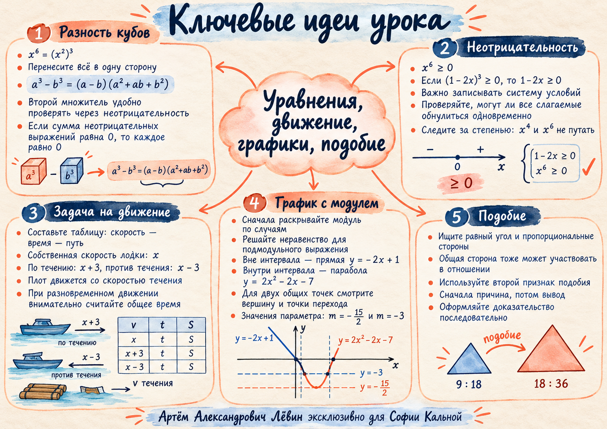

Четыре метода решения задач
Разность кубов и знак выражения. Движение лодки и плота. Построение графика с модулем. Доказательство подобия в трапеции.
Разность кубов и неотрицательность
Почему уравнение шестой степени иногда сводится к квадратному?
Для уравнения x⁶ = (8 − 7x)³ представим левую часть как (x²)³ и используем формулу разности кубов.
Разложение
Здесь a = x², b = 8 − 7x. Первый множитель даёт:
x² + 7x − 8 = (x + 8)(x − 1) = 0
x = −8 или x = 1
Второй множитель проверяем отдельно: a² + ab + b² = (a + b/2)² + 3b²/4. Нуль возможен лишь при a = 0 и b = 0 одновременно, что здесь невозможно.
Для искомых корней x⁶ ≥ 0, значит 8 − 7x ≥ 0. Поэтому все три слагаемых второго множителя x⁴ + x²(8 − 7x) + (8 − 7x)² неотрицательны.
Чтобы сумма обратилась в нуль, необходима система условий x⁴ = 0, x²(8 − 7x) = 0 и (8 − 7x)² = 0. Она несовместна.
- Я различаю степени x⁴ и x⁶ и не теряю знаки при раскрытии скобок.
- При равенстве нулю суммы неотрицательных слагаемых записываю одновременные условия.
- Проверяю возможность обнуления второго множителя.
Лодка, течение и отсрочка старта
Один участок пути, три скорости и два разных времени старта.
В примере занятия течение имеет скорость 3 км/ч. Лодка проходит по 108 км вниз и вверх по реке. Плот вышел на два часа раньше лодки и к моменту её возвращения прошёл 51 км.
| Участник | Путь, км | Скорость, км/ч | Время, ч |
|---|---|---|---|
| Лодка вниз | 108 | x + 3 | 108/(x + 3) |
| Лодка вверх | 108 | x − 3 | 108/(x − 3) |
| Плот | 51 | 3 | 17 |
Составляем уравнение
- Собственная скорость лодки — x; обязательно x > 3.
- Плот двигался 51/3 = 17 часов.
- Лодка стартовала на 2 часа позже, следовательно её время — 15 часов.
x = 15 км/ч
Проверка: 108/18 = 6 часов по течению; 108/12 = 9 часов против. Всего 15 часов.
Модуль превращает одну формулу в две ветви
Сначала определяем допустимые интервалы, затем строим график и считаем пересечения с y = m.
Из x² − 4 ≥ 0 следует x ≤ −2 или x ≥ 2. Поэтому:
f(x) = 2x² − 2x − 7, если −2 < x < 2
Точки стыка: (−2; 5) и (2; −3). Вершина внутренней параболы: (1/2; −15/2).
Число m задаёт высоту горизонтальной прямой. Чтобы найти два пересечения, исследуйте высоты вершины и точек перехода, а затем проверяйте количество различных точек.
Ответ: m = −15/2 или m = −3.
- Сначала решаю неравенство для подмодульного выражения.
- Строю только подходящий фрагмент прямой или параболы.
- В ответе для y = m указываю ординаты, а не абсциссы.
Доказываем подобие в трапеции
Одна общая диагональ может быть стороной обоих сравниваемых треугольников.
Второй признак подобия
В трапеции BC ∥ AD, следовательно ∠CBD = ∠BDA как накрест лежащие углы.
BD/DA = 18/36 = 1/2
Две пары сторон при равном угле между ними пропорциональны. По второму признаку:
Соответствие вершин: C ↔ B, B ↔ D, D ↔ A. Коэффициент подобия первого треугольника ко второму — 1/2.
Самостоятельная тренировка · Путь А
Десять заданий из пособия. Ответы раскрывайте только после самостоятельной попытки.
- Решите x⁶ = (8 − 7x)³ двумя способами: разность кубов и равенство оснований кубов.
- Решите x⁶ = (1 − 2x)³. Объясните невозможность обнуления второго множителя.
- Решите x⁶ = (4 − x)³. Запишите точные корни.
- Лодка прошла по 45 км вниз и вверх за 8 ч. Течение 3 км/ч. Найдите собственную скорость.
- Течение 2 км/ч. Плот стартовал на 4 ч раньше лодки и прошёл 28 км до её возвращения. Лодка прошла по 48 км в обоих направлениях. Найдите скорость лодки.
- Течение 2 км/ч. Плот стартовал на 3 ч раньше лодки, прошёл 34 км к её возвращению. Лодка прошла по 96 км в каждом направлении. Найдите её скорость.
- Постройте график y = x² − 2x − |x² − 4| − 3. Найдите m, при которых y = m имеет ровно две общие точки с графиком.
- Постройте y = x² − |x² − 4|. Когда y = m имеет ровно две общие точки? Исследуйте также m = 4.
- В трапеции ABCD с BC ∥ AD, BC = 9, BD = 18, AD = 36 докажите подобие △CBD и △BDA и найдите коэффициент.
- В трапеции ABCD с BC ∥ AD, BC = 12, BD = 18, AD = 27, CD = 8 докажите подобие △CBD и △BDA, найдите AB.
Показать ответы к десяти заданиям
01 x = −8; x = 1.
02 x = −1 ± √2.
03 x = (−1 ± √17)/2.
04 12 км/ч.
05 10 км/ч.
06 14 км/ч.
07 m = −15/2 и m = −3.
08 −4 < m < 4; при m = 4 бесконечно много общих точек.
09 Подобие доказано; коэффициент 1/2.
10 AB = 12.
Ментальная карта занятия
Основные ориентиры для быстрого повторения.
